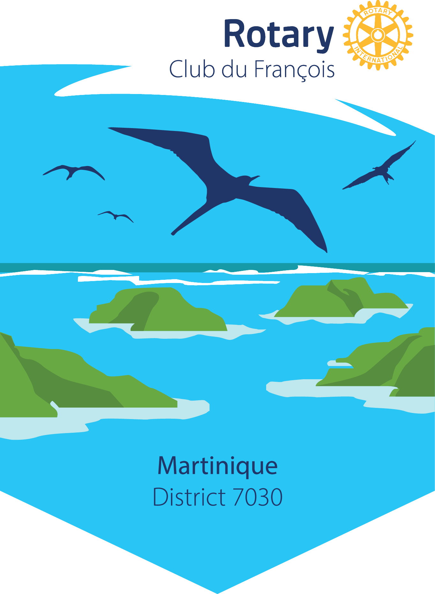

Le Rotary Club du François fait partie du District 7030, Zone 34 du Rotary International, réunissant les clubs des Antilles et de la Guyane.
Une équipe dirigeante organisée par fonctions, chacune responsable d'un domaine clé de la vie du club.
Pilote la stratégie du club, préside les réunions et représente le club auprès du District.
Gère les adhésions, les comptes-rendus de réunions et la correspondance officielle.
Assure le suivi budgétaire, les cotisations et la vie financière du club.
Organise les cérémonies officielles et veille au respect du protocole rotarien.
Anime les liens avec les clubs Rotaract et Interact et les programmes jeunesse. Le club parraine le club Interact « La Yole », charté le 14 février 2023.
Coordonne la conception et le suivi opérationnel des projets d'action du club.
Chaque club Rotary porte un fanion qui lui est propre. Celui du Rotary Club du François raconte notre territoire et notre identité.

Le fanion du Rotary Club du François est caractéristique de notre localité. On y voit une série d'îlots entourés de bancs de sable et de hauts-fonds, dont les célèbres « fonds blancs » et la fameuse « baignoire de Joséphine », qui permettent la baignade en pleine mer, au large des côtes.
Au second plan, on distingue une ligne de brisants, véritable barrière qui protège la côte et permet la pratique, en toute sécurité, de la navigation de plaisance et des sports nautiques.
Le bleu, en arrière-plan, représente le grand large et, en quelque sorte, l'ouverture au monde. En haut sont représentées les frégates, ces grands oiseaux de mer familiers des régions caraïbes, que l'on voit habituellement planer le long de nos falaises.
Centre International de Séjour
Étang Zabricot
97200 Fort-de-France, Martinique
Le club se réunit régulièrement pour ses réunions statutaires et ses commissions d'action. Consultez l'agenda pour connaître les prochaines dates.
Chaque mois, les actions du club, le thème rotarien du moment et les rendez-vous à venir, directement dans votre boîte aux lettres. Un courriel par mois, pas davantage.